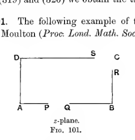
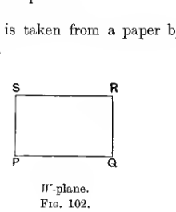
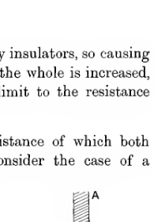

Chapter X#
Steady Currents in Continuous Media#
Components of Current.#
370. In the present chapter we shall consider steady currents of electricity flowing through continuous two- and three-dimensional conductors instead of through systems of linear conductors.
We can find the direction of flow at any point \(P\) in a conductor by imagining that we take a small plane of area \(dS\) and turn it about at the point \(P\) until we find the position in which the amount of electricity crossing it per unit time is a maximum. The normal to the plane when in this position will give the direction of the current at \(P\), and if the total amount of electricity crossing this plane per unit time when in this position is \(CdS\), then \(C\) may be defined to be the strength of the current at \(P\).
If \(l\), \(m\), \(n\) are the direction-cosines of the direction of the current at \(P\), then the current \(C\) may be treated as the superposition of three currents \(lC\), \(mC\), \(nC\) parallel to the axes. To prove this we need only notice that the flow across an area \(dS\) of which the normal makes an angle \(\theta\) with the direction of the current, and has direction-cosines \(l'\), \(m'\), \(n'\), must be \(CdS\cos\theta\), or
The first term of this expression may be regarded as the contribution from a current \(lC\) parallel to the axis \(Ox\), and so on. The quantities \(lC\), \(mC\), \(nC\) are called the components of the current at the point \(P\).
Lines and Tubes of Flow.#
371. Definition. A line of flow is a line drawn in a conductor such that at every point its tangent is in the direction of the current at the point.
Definition. A tube of flow is a tubular region of infinitesimal cross-section, bounded by lines of flow.
It is clear that at every point on the surface of a tube of flow, the current is tangential to the surface. Thus no current crosses the boundary of a tube of flow, from which it follows that the aggregate current flowing across all cross-sections of a tube of flow will be the same.
The amount of this current will be called the strength of the tube.
Thus if \(C\) is the current at any point of a tube of flow, and if \(\omega\) is the cross-section of the tube at that point, then \(C\omega\) is constant throughout the length of the tube, and is equal to the strength of the tube.
There is an obvious analogy between tubes of flow in current electricity and tubes of force in statical electricity, the current \(C\) corresponding to the polarisation \(P\). In current electricity, \(C\omega\) is constant and equal to the strength of the tube of flow, while in statical electricity \(P\omega\) is constant and equal to the strength of the tube of force (§ 129).
Specific Resistance.#
372. The specific resistance of a substance is defined to be the resistance of a cube of unit edge of the substance, the current entering by a perfectly conducting electrode which extends over the whole of one face, and leaving by a similar electrode on the opposite face.
The specific resistances of some substances of which conductors and insulators are frequently made are given in the following table. The units are the centimetre and the ohm.
Substance |
Specific resistance |
|---|---|
Silver |
\(1.61 \times 10^{-6}\) |
Copper |
\(1.64 \times 10^{-6}\) |
Iron (soft) |
\(9.83 \times 10^{-6}\) |
Iron (hard) |
\(9.06 \times 10^{-6}\) |
Mercury |
\(96.15 \times 10^{-6}\) |
Dilute sulphuric acid (\(\frac{1}{12}\) acid at \(22^\circ\) C.) |
\(3.3\) |
Dilute sulphuric acid (\(\frac{1}{3}\) acid at \(22^\circ\) C.) |
\(1.6\) |
Glass (at \(200^\circ\) C.) |
\(2.27 \times 10^7\) |
Glass (at \(400^\circ\) C.) |
\(7.35 \times 10^4\) |
Guttapercha, about |
\(3 \times 10^{14}\) |
If \(\tau\) is the specific resistance of any substance, the resistance of a wire of length \(l\) and cross-section \(s\) will clearly be \(\frac{l\tau}{s}\).
Ohm’s Law.#
373. In a conductor in which a current is flowing, different points will, in general, be at different potentials. Thus there will be a system of equipotentials and of lines of force inside a conductor similar to those in an electrostatic field. It is found, as an experimental fact, that in a homogeneous conductor, the lines of flow coincide with the lines of force, or, in other words, the electricity at every point moves in the direction of the forces acting on it.
In considering the motion of material particles in general it is not usually true that the motion of the particles is in the direction of the forces acting upon them. The velocity of a particle at the end of any small interval of time is compounded of the velocity at the beginning of the interval together with the velocity generated during the interval. The latter velocity is in the direction of the forces acting on the particle, but is generally insignificant in comparison with the original velocity of the particle. In the particular case in which the original velocity of the particle was very small, the direction of motion at the end of a small interval will be that of the force acting on the particle. If the particle moves in a resisting medium, it may be that the velocity of the particle is kept permanently very small by the resistance of the medium: in this case the direction of motion of the particle at every instant, relatively to the medium, may be that of the forces acting on it.
On the modern view of electricity, a current of electricity is composed of electrons which are driven through a conductor by the electric forces acting on them, and in their motion experience frequent collisions with the molecules of the conductor. The effect of these collisions is continually to check the forward velocity of the electrons, so that this forward velocity is kept small just as if they were moving through a resisting medium of the ordinary kind, and so it comes about that the direction of flow of current is in the direction of the electric intensity (cf. § 345 a).
374. Let us select any tube of force of small cross-section inside a conductor, and let \(P\), \(Q\) be any two points on this tube of force, at which the potentials are \(V_P\) and \(V_Q\), the former being the greater. Let these points be so near together that throughout the range \(PQ\) the cross-section of the tube of force may be supposed to have a constant value \(\omega\), while the specific resistance of the material of the conductor may be supposed to have a constant value \(\tau\).
From what has been said in § 373, it follows that the tube of force under consideration is also a tube of flow. If \(C\) denotes the current, then the current flowing through this tube of flow in the direction from \(P\) to \(Q\) will be \(C\omega\). This current may, within the range \(PQ\), be regarded as flowing through a conductor of cross-section \(\omega\) and of specific resistance \(\tau\). The resistance of this conductor from \(P\) to \(Q\) is accordingly \(\frac{PQ\cdot\tau}{\omega}\), while the fall of potential is \(V_P - V_Q\). Thus by Ohm’s Law
so that
If \(\frac{\partial}{\partial s}\) denotes differentiation along the tube of force, the fraction on the left of the foregoing equation reduces, when \(P\) and \(Q\) are made to coincide, to \(-\frac{\partial V}{\partial s}\), so that the equation assumes the form
Let \(l\), \(m\), \(n\) be the direction-cosines of the line of flow at \(P\), and let \(u\), \(v\), \(w\) be the components of the current at \(P\), so that \(u = lC\), etc. Then
and we see that equation (309) is equivalent to the three equations
These equations express Ohm’s Law in a form appropriate to flow through a solid conductor.
Equation of Continuity.#
375. Since we are supposing the currents to be steady, the amount of current which flows into any closed region must be exactly equal to the amount which flows out. This can be expressed by saying that the integral algebraic flow into any closed region must be nil.
Let any closed surface \(S\) be taken entirely inside a conductor. Let \(l\), \(m\), \(n\) be the direction-cosines of the inward normal to any element \(dS\) of this surface, and let \(u\), \(v\), \(w\) be the components of current at this point. Then the normal component of flow across the element \(dS\) is \(lu + mv + nw\), and the condition that the integral algebraic flow across the surface \(S\) shall be nil is expressed by the equation
By Green’s Theorem (§ 176), this equation may be transformed into
and since this integral has to vanish, whatever the region through which it is taken, each integrand must vanish separately. Hence at every point inside the conductor, we must have
This is the so-called “equation of continuity,” expressing that no electricity is created or destroyed or allowed to accumulate during the passage of a steady current through a conductor.
The same equation can be obtained at once on considering the current-flow across the different faces of a small rectangular parallelepiped of edges \(dx\), \(dy\), \(dz\) (cf. § 49).
Equation (310) of course expresses that the vector \(\mathbf{C}\) of which the components are \(u\), \(v\), \(w\), must be solenoidal. The equation of continuity can accordingly be expressed in the form
Equation satisfied by the Potential.#
376. On substituting in equation (311) the values for \(u\), \(v\), \(w\) given by equations (310), we obtain
The potential must accordingly be a solution of this differential equation. The equation is the same as would be satisfied by the potential in an uncharged dielectric in an electrostatic field, provided the inductive capacity at every point is proportional to \(\frac{1}{\tau}\). If the specific resistance of the conductor is the same throughout, the differential equation to be satisfied by the potential reduces to
377. We may for convenience suppose that the current enters and leaves by perfectly conducting electrodes, and that the conductor through which the current flows is bounded, except at the electrodes, by perfect insulators. Then, over the surface of contact between the conductor and the electrodes, the potential will be constant. Over the remaining boundaries of the conductor, the condition to be satisfied is that there shall be no flow of current, and this is expressed mathematically by the condition that \(\frac{\partial V}{\partial n}\) shall vanish.
Thus the problem of determining the current-flow in a conductor amounts mathematically to determining a function \(V\) such that equation (312) is satisfied throughout the volume of the conductor, while either \(\frac{\partial V}{\partial n} = 0\), or else \(V\) has a specified value, at each point on the boundary. By the method used in § 188, it is easily shewn that the solution of this problem is unique.
It is only in a very few simple cases that an exact solution of the problem can be obtained. There are, however, various artifices by which approximations can be reached, and various ways of regarding the problem from which it may be possible to form some idea of the physical processes which determine the nature of the flow in a conductor. Some of these will be discussed later (§§ 386-394). At present we consider general characteristics of the flow of currents through conductors.
Conditions to be satisfied at the Boundary of two Conducting Media.#
378. The conditions to be satisfied at a boundary at which the current flows from one conductor to another are as follows:
(i) Since there must be no accumulation of electricity at the boundary, the normal flow across the boundary must be the same whether calculated in the first medium or the second. In other words
where \(\frac{\partial}{\partial n}\) denotes differentiation along the normal to the boundary.
(ii) The tangential force must be continuous, or else the potential would not be continuous. Thus
where \(\frac{\partial}{\partial s}\) denotes differentiation along any line in the boundary.
These boundary conditions are just the same as would be satisfied in an electrostatical problem at the boundary between two dielectrics of inductive capacities equal to the two values of \(\frac{1}{\tau}\). Thus the equipotentials in this electrostatic problem coincide with the equipotentials in the actual current problem, and the lines of force in the electrostatic problem correspond with the lines of flow in the current problem.
Clearly these results could be deduced at once from the differential equation (312) on passing to the limit and making \(\tau\) become discontinuous on crossing a boundary.
Refraction of Lines of Flow.#
379. Let any line of flow cross the boundary between two different conducting media of specific resistances \(\tau_1\), \(\tau_2\), making angles \(\epsilon_1\), \(\epsilon_2\) with the normal at the point at which it meets the boundary in the two media respectively. The lines of flow satisfy the same conditions as would be satisfied by electrostatic lines of force crossing the boundary between two dielectrics of inductive capacities \(\frac{1}{\tau_1}\), \(\frac{1}{\tau_2}\), so that we must have (cf. equation (71))
Hence
expressing the law of refraction of lines of flow.
380. As an example of refraction of lines of current flow, we may consider the case of a steady uniform current in a conductor being disturbed by the presence of a sphere of different metal inside the conductor. The lines shown in fig. 78 will represent the lines of flow if the specific resistance of the sphere is less than that of the main conductor. The lines of flow tend to crowd into the sphere, this being the better conductor, in the language of popular science, the current tends to take the path of least resistance.
Charge on a Surface of Discontinuity.#
381. If \(u\) is the normal component of current flowing across the boundary between two different conductors, we have by Ohm’s Law,
where \(\frac{\partial}{\partial n}\) denotes differentiation along the normal which is drawn in the direction in which \(u\) is measured (say from (1) to (2)), and \(V_1\), \(V_2\) are the potentials in the two conductors.
If there is no charge on the boundary between the two conductors we must, from equation (70), have the relation
where \(K_1\), \(K_2\) are the inductive capacities of the two conductors. This condition will, however, in general be inconsistent with the condition which, as we have just seen, is made necessary by the continuity of \(u\). Thus there will in general be a surface charge on the boundary between two conductors of different materials.
The amount of this charge is given at once by equation (72), p. 125. If \(\sigma\) denotes the surface density at any point, we have
This surface charge is very small compared with the charges which occur in statical electricity. For instance, if we have current of \(100\) amperes per sq. cm. passing from one metallic conductor to another, we take in formula (313),
the last two being true as regards order of magnitude only. The value of \(4\pi\sigma\) is of the order of magnitude of \(K\tau u\), or \(3 \times 10^{-6}\) in electrostatic units. As has been said, the value of \(4\pi\sigma\) at the surface of a conductor charged as highly as possible in air is of the order of \(100\).
382. As an example of the distribution of a surface charge, we may notice that the surface-density of the charge on the surface of the sphere considered in § 380 will be proportional to either value of \(\frac{\partial V}{\partial n}\), and therefore to \(\cos \theta\), where \(\theta\) is the angle between the radius through the point and the direction of flow of the undisturbed current.
Generation of Heat.#
383. Consider any small element of a tube of flow, length \(ds\), cross-section \(\omega\). The current per unit area is, by equations (310), \(-\frac{1}{\tau}\frac{\partial V}{\partial s}\), so that the current flowing through the tube is \(-\frac{1}{\tau}\frac{\partial V}{\partial s}\,\omega\). The resistance of the element of the tube under consideration is \(\frac{\tau ds}{\omega}\). Hence, as in § 355, the amount of heat generated per unit time in this element is
or \(\frac{1}{\tau}\left(\frac{\partial V}{\partial s}\right)^2\omega ds\).
Thus the heat generated per unit time per unit volume is \(\frac{1}{\tau}\left(\frac{\partial V}{\partial s}\right)^2\), and the total generation of heat per unit time will be
or
Thus the heat generated per unit time is \(8\pi\) times the energy of the whole field in the analogous electrostatic problem (§ 169).
Rate of generation of heat a minimum.#
384. It can be shewn that for a given current flowing through a conductor, the rate of heat generation is a minimum when the current distributes itself as directed by Ohm’s Law. To do this we have to compare the rate of heat generation just obtained with the rate of heat generation when the current distributes itself in some other way.
Let us suppose that the components of current at any point have no longer the values
assigned to them by Ohm’s Law, but that they have different values
In order that there may be no accumulation at any point under this new distribution, the components of current must satisfy the equation of continuity, so that we must have
By the same reasoning as in § 383, we find for the rate at which heat is generated under the new system of currents,
which, on expanding, is equal to
On transforming by Green’s Theorem, the second term
The volume integral vanishes by equation (315), the integrand of the surface integral vanishes over each electrode from the condition that the total flow of current across the electrode is to remain unaltered, and at every point of the insulating boundary from the condition that there is to be no flow across this boundary. Thus the new rate of generation of heat is represented by the first and third terms of expression (316). The first term represents the old rate of generation of heat, the third term is an essentially positive quantity. Thus the rate of heat generation is increased by any deviation from the natural distribution of currents, proving the result.
385. An immediate result of this is that any increase or decrease in the specific resistance of any part of a conductor is accompanied by an increase or decrease of the resistance of the conductor as a whole. For on decreasing the value of \(\tau\) at any point and keeping the distribution of currents unaltered, the rate of heat production will obviously decrease. On allowing the currents to assume their natural distribution, the rate of heat production will further decrease. Thus the rate of heat production with a natural distribution of currents is lessened by any decrease of specific resistance. But if \(I\) is the total current transmitted by the conductor, and \(R\) the resistance of the conductor, this rate of heat production is \(RI^2\). Thus \(R\) decreases when \(\tau\) is decreased at any point, and obviously the converse must be true (cf. § 359).
The Solution of Special Problems.#
Current-flow in an Infinite Conductor.#
386. A good approximation to the conditions of electric flow can occasionally be obtained by neglecting the restrictive influence of the boundaries of a conductor, and regarding the problem as one of flow between two electrodes in an infinite conductor. For simplicity, we shall consider only the case in which the conductor is homogeneous.
The conditions to be satisfied by the potential \(V\) are as follows. We must have \(V = V_1\) over one electrode, and \(V = V_2\) over the second electrode, while \(\frac{\partial V}{\partial r}\) must vanish at infinity to a higher order than \(\frac{1}{r^2}\) and throughout the conductor we must have \(\nabla^2 V = 0\) (§ 376). We can easily see (cf. §§ 186, 187) that these conditions determine \(V\) uniquely.
Consider now an analogous electrostatic problem. Let the conducting medium be replaced by air, while the electrodes remain conductors. Let the electrodes receive equal and opposite charges of electricity until their difference of potential is \(V_1 - V_2\). At this stage let \(\psi\) denote the electrostatic potential at any point in the field. Let \(\psi_1\), \(\psi_2\) be the values of \(\psi\) over the two electrodes, so that \(\psi_1 - \psi_2 = V_1 - V_2\). Then there will be a constant \(C\) (namely \(V_1 - \psi_1\)), such that \(\psi + C\) assumes the values \(V_1\), \(V_2\) respectively over the two electrodes. Moreover, \(\nabla^2\psi = 0\) throughout the field, so that \(\nabla^2(\psi + C) = 0\) throughout the field, and \(\psi = 0\) at infinity except for terms in \(\frac{1}{r^2}\) (cf. § 67), so that \(\frac{\partial}{\partial r}(\psi + C)\) vanishes at infinity to a higher order than \(\frac{1}{r^2}\).
Hence \(\psi + C\) satisfies the conditions which, as we have seen, must be satisfied by the potential \(V\) in the current problem, and these are known to suffice to determine \(V\) uniquely. It follows that the value of \(V\) must be \(\psi + C\).
Thus the lines of flow in the current problem are identical with the lines of force when the two electrodes are charged to different potentials in air.
The normal current-flow at any point on the surface of an electrode is \(-\frac{1}{\tau}\frac{\partial V}{\partial n}\), so that the total flow of current outwards from this electrode
If \(E\) is the charge on this electrode in the analogous electrostatic problem we have, by Gauss’ Theorem,
so that the total flow of current is seen to be \(\frac{4\pi E}{\tau}\).
If \(p_{11}\), \(p_{12}\), \(p_{22}\) are the coefficients of potential in the electrostatic problem
so that
If \(I\) is the total current, and \(R\) the equivalent resistance between the electrodes, we have just seen that
so that
If we regard the two electrodes in air as forming a condenser, and denote its capacity by \(C\), we have
so that
387. As instances of the applications of formulae (317) and (318) to special problems, we have the following:
I. The resistance per unit length between two concentric cylinders of radii \(a\), \(b\) (as, for instance, the resistance between the core of a submarine cable and the sea), is, by formula (318),
II. The resistance per unit length between two straight parallel cylindrical wires of radii \(a\), \(b\), placed with their centres at a great distance \(r\) apart, in an infinite conducting medium, is, by formula (317),
III. The resistance between two spherical electrodes, radii \(a\), \(b\), at a great distance \(r\) apart, in an infinite conducting medium, is, by formula (317),
388. If two electrodes of any shape are placed in an infinite medium at a distance \(r\) apart, which is great compared with their linear distances, we may take \(p_{12}\) in formula (317) equal, to a first approximation, to \(\frac{1}{r}\). This is small compared with \(p_{11}\) and \(p_{22}\), so that, to a first approximation, we may replace formula (317) by
It accordingly appears that the resistance of the infinite medium may be regarded as the sum of two resistances, a resistance \(\frac{\tau p_{11}}{4\pi}\) at the crossing of the current from the first electrode to the medium, and a resistance \(\frac{\tau p_{22}}{4\pi}\) at the return of the current from the medium to the second electrode. Thus we may legitimately speak of the resistance of a single junction between an electrode and the conducting medium surrounding it.
For instance, suppose a circular plate of radius \(a\) is buried deep in the earth, and acts as electrode to distribute a current through the earth. The value of \(p_{11}\) for a disc of radius \(a\) is \(\frac{\pi}{2a}\), so that the resistance of the junction is \(\frac{\tau}{8a}\). So also if a disc of radius \(a\) is placed on the earth’s surface, the resistance at the junction is \(\frac{\tau}{4a}\), and clearly this also is the resistance if the electrode is a semicircle of radius \(a\) buried vertically in the earth with its diameter in the surface.
Flow in a Plane Sheet of Metal.#
389. When the flow takes place in a sheet of metal of uniform thickness and structure, so that the current at every point may be regarded as flowing in a plane parallel to the surface of the sheet, the whole problem becomes two-dimensional. If \(x\), \(y\) are rectangular coordinates, the problem reduces to that of finding a solution of
which shall be such that either \(V\) has a given value, or else \(\frac{\partial V}{\partial n} = 0\), at every point of the boundary. The methods already given in Chap. VIII for obtaining two-dimensional solutions of Laplace’s equation are therefore available for the present problem. The method of greatest value is that of Conjugate Functions.
If the conducting medium extends to infinity, or is bounded entirely by the two electrodes, the transformations will be identical with those already discussed for two conductors at different potentials (§ 386). If the medium has also boundaries at which \(\frac{\partial V}{\partial n} = 0\), the procedure must be slightly different.
We must try to transform the two electrodes into lines \(V = \text{constant}\), and the other boundaries into lines \(U = \text{constant}\), so that the whole of the medium becomes transformed into the interior of a rectangle in the \(U\), \(V\) plane.
Let
be a transformation which gives the required value for \(V\) over both electrodes, and gives \(\frac{\partial V}{\partial n} = 0\) over the boundary of a conductor. Then \(V\) will be the potential at any point, the lines \(V = \text{constant}\) will be the equipotentials, and the lines \(U = \text{constant}\), being the orthogonal trajectories of the equipotentials, will be the lines of flow.
At any point the direction of the current is normal to the equipotential through the point, and the amount of the current is given by
But \(\frac{\partial V}{\partial n}\) is equal to \(\frac{\partial U}{\partial s}\), where \(\frac{\partial}{\partial s}\) denotes differentiation in the equipotential. Thus the current flowing across any piece \(PQ\) of an equipotential
If \(P\), \(Q\) are any two points in the conductor, a path from \(P\) to \(Q\) can be regarded as made up of a piece of an equipotential \(PN\), and a piece of a line of flow \(NQ\). The flow across \(NQ\) is zero, that across \(PN\) is
This is accordingly the total flow across \(PQ\), and since \(U_N = U_Q\), it may be written as
390. As an illustration, let us suppose that the conducting plate is a polygon, two or more edges being the electrodes. We can transform this into the real axis in the \(\zeta\)-plane by a transformation of the type
and this real axis has to be transformed into a rectangle formed (say) by the lines \(V = V_0\), \(V = V_1\), \(U = 0\), \(U = C\) in the \(W\)-plane. The transformation for this will be
where \(a_0\), \(a_p\) and \(a_q\), \(a_r\) are the points on the real axis of \(\zeta\) which determine the ends of the electrodes. By elimination of \(\zeta\) from the integrals of equations (319) and (320) we obtain the transformation required.
391. The following example of this method is taken from a paper by H. F. Moulton (Proc. Lond. Math. Soc. III. p. 104).

A rectilinear boundary in the \(z\)-plane forms a rectangular channel-like outline labelled \(A\), \(B\), \(C\), and \(D\), with electrode points \(P\) and \(Q\) marked along the lower opening and \(R\) and \(S\) marked near the upper ends. The sketch shows the original plate geometry before transformation.

A simple rectangle in the \(W\)-plane is labelled \(P\), \(Q\), \(R\), and \(S\) at its corners, representing the transformed image of the conducting plate used to turn the boundary-value problem into a rectangular domain.
In fig. 101, let \(ABCD\) be a rectangular plate, the piece \(PQ\) of one or more sides being one electrode, and the piece \(RS\) of one or more other sides being the other electrode. Let the rectangle \(PQRS\) in fig. 102 be its transformation in the \(W\)-plane. In the intermediate \(\zeta\)-plane, let the points \(A\), \(B\), \(C\), \(D\) transform to \(\zeta = a\), \(b\), \(c\), \(d\) respectively, and let the points \(P\), \(Q\), \(R\), \(S\) transform to \(\zeta = p\), \(q\), \(r\), \(s\) respectively. Then the transformations are
If we write
the integrals are
The sides \(AB\), \(AD\) of the first rectangle are the periods \(\frac{K}{m}\), \(\frac{iK'}{m}\) of \(\operatorname{sn} mz\) (mod \(\kappa\)); the sides \(PQ\), \(PS\) of the second rectangle are the periods in \(W\), say \(\frac{L}{m'}\), \(\frac{iL'}{m'}\), of \(\operatorname{sn} m'W\) (mod \(\lambda\)).
In the \(W\)-plane, the potential difference of the two electrodes is \(PS\), or \(\frac{L'}{m'}\), while the current is \(\frac{1}{\tau}PQ\), or \(\frac{L}{m'\tau}\). The equivalent resistance of the plate is accordingly \(\tau L'/L\), so that the quantity we are trying to determine is \(L'/L\).
Let the coordinates of \(P\), \(Q\), \(R\), \(S\) in the \(z\)-plane be \(z_1\), \(z_2\), \(z_3\), \(z_4\). In the \(\zeta\)-plane the coordinates of these points are \(p\), \(q\), \(r\), \(s\). Hence from equations (321), we have
and similar equations for \(q\), \(r\), \(s\). The ratio \(L'/L\) of which we are in search is now given by
the whole being to modulus \(\kappa\). The values of \(\operatorname{sn} mz\) can be obtained from Legendre’s Tables.
Moulton has calculated the resistance of a square sheet with electrodes, each of length equal to one-fifth of a side, in the following four cases:
Electrodes at middle of two opposite sides, Resistance \(= 1\cdot 745R\),
Electrodes at ends of two opposite sides and facing one another, Resistance \(= 2\cdot 408R\),
Electrodes at ends of two opposite sides and not facing one another, Resistance \(= 2\cdot 589R\),
Electrodes bent equally round two opposite corners of square, Resistance \(= 3\cdot 027R\),
where \(R\) is the resistance of the square when the whole of two opposite sides form the electrodes. A comparison of the results in cases (2) and (3) shews how large a part of the resistance is due to the crowding in of the lines of force near the electrode, and how small a part arises from the uncrowded part of the path.
Limits to the Resistance of a Conductor.#
392. The result obtained in § 386 enables us to assign an upper and a lower limit to the resistance of a conductor, when this resistance cannot be calculated accurately. For if any parts of the conductor are made into perfect conductors, the resistance of the whole will be lessened, and it may be possible to change parts of the conductor into perfect conductors in such a way that the resistance of the new conductor can be calculated. This resistance will then be a lower limit to the resistance of the original conductor.
As an illustration, we may examine the case of a straight wire of variable cross-section \(S\). Let us imagine that at small distances along its length we take cross-sections of infinitely small thickness, and make these into perfect conductors. The resistance between two such sections at distance \(ds\) apart, will be \(\frac{\tau ds}{S}\), where \(S\) is the cross-section of either. Thus a lower limit to the resistance is supplied by the formula
393. Again, if we replace parts of the conductor by insulators, so causing the current to flow in given channels, the resistance of the whole is increased, and in this way we may be able to assign an upper limit to the resistance of a conductor.
394. As an instance of a conductor to the resistance of which both upper and lower limits can be assigned, let us consider the case of a cylindrical conductor \(AB\) terminating in an infinite conductor \(C\) of the same material. This example is of practical importance in connection with mercury resistance standards. The appropriate analysis was first given by Lord Rayleigh, discussing a parallel problem in the theory of sound.

A narrow vertical cylindrical tube labelled from \(A\) at the top down to \(B\) at its mouth opens into a broad shaded half-space labelled \(C\). The sketch represents a cylindrical conductor ending on the surface of a semi-infinite conducting medium.
Let \(l\) be the length and \(a\) the radius of the tube. To obtain a lower limit to the resistance, we imagine a perfectly conducting plane inserted at \(B\). The resistance then consists of the resistance to this new electrode at \(B\), plus the resistance from this with the infinite conductor \(C\). The former resistance is \(\frac{l\tau}{\pi a^2}\), the latter, by § 388, is \(\frac{\tau}{4a}\), so that a lower limit to the whole resistance is
which is the resistance of a length \(l + \frac{\pi a}{4}\) of the tube.
To obtain an upper limit to the resistance, we imagine non-conducting tubes placed inside the main tube \(AB\), so that the current is constrained to flow in a uniform stream parallel to the axis of the main tube until the end \(B\) is reached. After this the current flows through the semi-infinite conductor \(C\) as directed by Ohm’s Law.
The resistance of the tube \(AB\) is, as before, \(\frac{l\tau}{\pi a^2}\). To obtain the resistance of the conductor \(C\), we must examine the corresponding electrostatic problem. If \(I\) is the total current, the flow of current per unit area over the circular mouth at \(B\) is \(I/\pi a^2\). In order that the potentials in the electrostatic problem may be the same, we must have a uniform surface density of electricity
on the surface of the disc.
The heat generated is \(I^2R\), where \(R\) is the resistance of the conductor \(C\). It is also
taken through the conductor \(C\). Now if \(W\) is the electrostatic energy of a disc of radius \(a\), having a uniform surface density \(\sigma = \frac{\tau I}{4\pi^2 a^2}\) on each side, we have
where the integral is taken through all space, or again,
where the integral is taken through the semi-infinite space on one side of the disc, i.e. through the space \(C\), if the disc is made to coincide with the mouth \(B\). On substituting for the volume integral in expression (323), we find that
Following Maxwell, we shall find it convenient to calculate \(W\) directly from the potential. If a disc of radius \(b\) has a uniform surface density \(\sigma\) on each side, the potential at a point \(P\) on its edge will be
where the integral is taken over one side of the disc, and \(r\) is the distance from \(P\) to the element \(dx\,dy\). Taking polar coordinates, with \(P\) as origin, the equation of the circle will be \(r = 2b\cos \theta\); we may replace \(dx\,dy\) by \(r\,dr\,d\theta\), and obtain
On increasing the radius of the disc to \(b+db\), we bring up a charge \(4\pi b\sigma db\) from infinity to potential \(8b\sigma\), so that the work done is
and integrating from \(b = 0\) to \(b = a\), we find for the potential energy of the complete disc of radius \(a\),
Thus, from equation (324),
or, since
Thus an upper limit to the whole resistance is
which is the resistance of a length \(l + \frac{8}{3\pi}a\) of the tube.
Thus we may say that the resistance of the whole is that of a length \(l + \alpha a\) of the tube, where \(\alpha\) is intermediate between \(\frac{\pi}{4}\) and \(\frac{8}{3\pi}\), i.e. between \(\cdot785\) and \(\cdot849\). Lord Rayleigh, by more elaborate analysis, has shewn that the upper limit for \(\alpha\) must be less than \(\cdot8242\), and believes that the true value of \(\alpha\) must be pretty close to \(\cdot82\).
The Passage of Electricity through Dielectrics.#
395. Since even the best insulators are not wholly devoid of conducting power, it is of importance to consider the flow of electricity in dielectrics.
Using the previous notation, we shall denote the potential at any point in the dielectric by \(V\), the specific resistance by \(\tau\), and the inductive capacity by \(K\). We shall consider steady flow first.
If the flow is to be steady, the equation of continuity, namely
must be satisfied. Also if there is a volume density of electrification \(\rho\), the potential must satisfy equation (62), namely
From a comparison of equations (325) and (326), it is clear that steady flow will not generally be consistent with having \(\rho = 0\). Hence if currents are started flowing through an uncharged dielectric, the dielectric will acquire volume charges before the currents become steady. When the currents have become steady, the value of \(V\) will be determined by equation (325) and the boundary conditions, and the value of \(\rho\) is then given by equation (326).
From equations (325) and (326), we obtain
The condition that \(\rho\) shall vanish, whatever the value of \(V\), is that \(K\tau\) shall be constant throughout the dielectric: if this condition is satisfied the value of \(\rho\) necessarily vanishes at every point for all systems of steady currents. The most important case of this condition being satisfied occurs when the dielectric is homogeneous throughout. If \(K\tau\) is not constant throughout the dielectric, equation (327) shews that we can have \(\rho = 0\) at every point provided the surfaces \(V = \text{cons.}\) and \(K\tau = \text{cons.}\) cut one another at right angles at every point, i.e. provided \(K\tau\) is constant along every line of flow.
We have already had an illustration (§ 381) of the accumulation of charge which occurs when the value of \(K\tau\) varies in passing along a line of flow.
Time of Relaxation in a Homogeneous Dielectric.#
396. Let a homogeneous dielectric be charged so that the volume density at any point is \(\rho\).
If any closed surface is taken inside the dielectric, the total charge inside this surface must be
while the rate at which electricity flows into the surface will, as in § 375, be
where \(u\), \(v\), \(w\) are the components of current and \(l\), \(m\), \(n\) are the direction cosines of the normal drawn into the surface. Since this rate of flow into the surface must be equal to the rate at which the charge inside the surface increases, we must have
The integral on the left may, by Green’s Theorem, be transformed into
and this again is equal, by equations (310), to
Thus we have
and since this is true whatever surface is taken, each integrand must vanish separately, and we must have, at every point of the dielectric,
We have also, as in equation (326),
so that
The integral of this equation is
where \(\rho_0\) is the value of \(\rho\) at time \(t = 0\).
Thus the charge at every point in the dielectric falls off exponentially with the time, the modulus of decay being \(\frac{4\pi}{K\tau}\). The time \(\frac{K\tau}{4\pi}\), in which all the charges in the dielectric are reduced to \(1/e\) times their original value, is called the “time of relaxation,” being analogous to the corresponding quantity in the Dynamical Theory of Gases.
The relaxation-time admits of experimental determination, and as \(\tau\) is easily determined, this gives us a means of determining \(K\) experimentally for conductors. In the case of good conductors, the relaxation-time is too small to be observed with any accuracy, but the method has been employed by Cohn and Arons to determine the inductive capacity of water. The value obtained, \(K = 73\cdot6\), is in good agreement with the values obtained in other ways (cf. § 84).
Discharge of a Condenser.#
397. Let us suppose that a condenser is charged up to a certain potential, and that a certain amount of leakage takes place through the dielectric between the two plates. Then, as we have just seen, the dielectric will, except in very special cases, become charged with electricity.
Now suppose that the two plates are connected by a wire, so that, in ordinary language, the condenser is discharged. Conduction through the wire is a very much quicker process than conduction through the dielectric, so that we may suppose that the plates of the condenser are reduced to the same potential before the charges imprisoned in the dielectric have begun to move. For simplicity, let us suppose that the plates of the condenser are both reduced to potential zero. Then the surface of the dielectric may, with fair accuracy, be regarded as an equipotential surface, the potential being zero all over it. It follows that there can be no lines of force outside this equipotential: all lines of force which originate on the charges imprisoned in the dielectric, and which do not terminate on similar charges, must terminate on the surface of the dielectric. Thus we shall have a system of charges on the surface of the dielectric, these charges being equal in magnitude but opposite in sign to those of Green’s “equivalent stratum” corresponding to the system of charges imprisoned in the dielectric. This system of charges on the surface of the dielectric is of the kind which Faraday would call a “bound” charge (cf. § 141).
Suppose the plates of the condenser to be again insulated. The system of charges inside the dielectric and at its surface is not an equilibrium distribution, so that currents will be set up in the dielectric, and a general rearrangement of electricity will take place. The potentials throughout the dielectric will change, and in particular the potentials of the condenser-plates at the surface of the dielectric will change. In other words, the charge on these plates is no longer a “bound” charge, but becomes, at least partially, a “free” charge. On joining the two plates by a wire, a new discharge will take place.
This is Maxwell’s explanation of the phenomenon of “residual discharge.” It is found that, some time after a condenser has been discharged and insulated, a second and smaller discharge can be obtained on joining the plates, after this a third, and so on, almost indefinitely. It should be noticed that, on the explanation which has been given, no residual discharge ought to take place if the dielectric is perfectly homogeneous. Maxwell’s theory accordingly receives confirmation from the experiments of Rowland and Nichols and others, who shewed that the residual discharge disappeared when homogeneous dielectrics were employed.
References.#
Flow in Conductors:
Maxwell. Electricity and Magnetism. Vol. i. Part ii. Chaps. vii, viii, ix.
Flow in Dielectrics, Residual Charges, etc.:
Maxwell. Electricity and Magnetism. Vol. i. Part ii. Chaps. x, xii.
Winkelmann’s Handbuch der Physik. Vol. iv. 1, pp. 157 et seq.
Hopkinson. Original Papers (Camb. Univ. Press, 1901). Vol. II.
Examples.#
1. The ends of a rectangular conducting lamina of breadth \(c\), length \(a\), and uniform thickness \(\tau\), are maintained at different potentials. If \(f(x,y)\) be the specific resistance \(\rho\) at a point whose distances from an end and a side are \(x\), \(y\), prove that the resistance of the lamina cannot be less than
or greater than
2. Two large vessels filled with mercury are connected by a capillary tube of uniform bore. Find superior and inferior limits to the conductivity.
3. A cylindrical cable consists of a conducting core of copper surrounded by a thin insulating sheath of material of given specific resistance. Shew that if the sectional areas of the core and sheath are given, the resistance to lateral leakage is greatest when the surfaces of the two materials are coaxal right circular cylinders.
4. Prove that the product of the resistance to leakage per unit length between two practically infinitely long parallel wires insulated by a uniform dielectric and at different potentials, and the capacity per unit length, is \(K\rho/4\pi\), where \(K\) is the inductive capacity and \(\rho\) the specific resistance of the dielectric. Prove also that the time that elapses before the potential difference sinks to a given fraction of its original value is independent of the sectional dimensions and relative positions of the wires.
5. If the right sections of the wires in the last question are semicircles described on opposite sides of a square as diameters, and outside the square, while the cylindrical space whose section is the semicircles similarly described on the other two sides of the square is filled up with a dielectric of infinite specific resistance, and all the neighbouring space is filled up with a dielectric of resistance \(\rho\), prove that the leakage per unit length in unit time is \(2V/\rho\), where \(V\) is the potential difference.
6. If \(\phi + i\psi = f(x+iy)\), and the curves for which \(\phi = \text{cons.}\) be closed curves, shew that the insulation resistance between lengths \(l\) of the surfaces \(\phi = \phi_0\), \(\phi = \phi_1\), is
where \([\psi]\) is the increment of \(\psi\) on passing once round a \(\phi\)-curve, and \(\rho\) is the specific resistance of the dielectric.
7. Current enters and leaves a uniform circular disc through two circular wires of small radius \(e\) whose central lines pass through the edge of the disc at the extremities of a chord of length \(d\). Shew that the total resistance of the sheet is
8. Using the transformation
prove that the resistance of an infinite strip of uniform breadth \(\pi\) between two electrodes distant \(2a\) apart, situated on the middle line of the strip and having equal radii \(\delta\), is
9. Shew that the transformation
enables us to obtain the potential due to any distribution of electrodes upon a thin conductor in the form of the semi-infinite strip bounded by \(y=0\), \(y=a\), and \(x=0\).
If the margin be uninsulated, find the potential and flow due to a source at the point \(x=c\), \(y=\frac{a}{2}\). Shew that if the flows across the three edges are equal, then \(\pi c = a\cosh^{-1}2\).
10. Equal and opposite electrodes are placed at the extremities of the base of an isosceles triangular lamina, the length of one of the equal sides being \(a\), and the vertical angle \(\frac{2\pi}{3}\). Shew that the lines of flow and equal potential are given by
where
and the modulus of \(\operatorname{cn}u\) is \(\sin 75^\circ\), the origin being at the vertex.
11. A circular sheet of copper, of specific resistance \(\sigma_1\) per unit area, is inserted in a very large sheet of tinfoil (\(\sigma_0\)), and currents flow in the composite sheet, entering and leaving at electrodes. Prove that the current-function in the tinfoil corresponding to an electrode at which a current \(e\) enters the tinfoil is the coefficient of \(i\) in the imaginary part of
where \(a\) is the radius of the copper sheet, \(z\) is a complex variable with its origin at the centre of the sheet, and \(c\) is the distance of the electrode from the origin, the real axis passing through the electrode.
Generalise the expression for any position of the electrode in the copper or in the tinfoil, and investigate the corresponding expressions determining the lines of flow in the copper.
12. A uniform conducting sheet has the form of the catenary of revolution
Prove that the potential at any point due to an electrode at \(x_0\), \(y_0\), \(z_0\), introducing a current \(C\), is